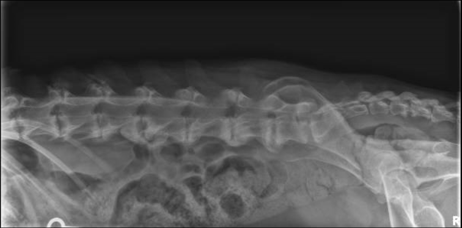

at the University of Minnesota, Veterinary Medical Center, Small Animal Hospital
General neurology service (both medical and surgical)
Diagnosis and treatment for most neurological problems

Patients are generally seen on a referral basis, but self-referrals are accepted. A neurologic assessment will be performed at the initial exam with one of our board-certified neurologists. After discussion with the clients regarding the recommended diagnostic and therapeutic plan, only initial blood work and radiographs may be performed on the same day. Any further diagnostics and/or surgeries will be scheduled to follow on a future date unless it is an emergency.
This video provides information for new clients of the VMC Neurology Department about their upcoming appointment, what they can expect, and gives a detailed look into the neurologic exam.